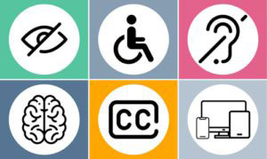

Why Should Design Be Accessible?
Why Should Design Be Accessible?
Disabilities & Impairments
About 61,000,000 people in the United States have a disability. There are many different types of disabilities
that effect individuals. The WCAG guidelines aim to create a web that is accessible for everyone by creating
laws around how pages are created and how information is accessed.
Visual

About 8% of people in the U.S
have a visual impairment
Auditory
About 14% people in the U.S
have a hearing impairment.
Physical / Mobility
About 11% people in the U.S
have a mobility impairment.
Speech / Language
About 5-10% of people in the U.S
have a speech disorder.
Learning
About 15% of people in the U.S
have a learning disability.
Neurological / Cognitive
About 14% of people in the U.S
have a cognitive disability.
Barriers
Barriers
- poor color contrast
- using only color to give information
- lack of text alternatives
- inaccessible forms
- mouse-only navigation

WCAG Guidelines
1. Perceivable
Information and user interface components must be presentable to users in ways they can perceive.
- - 1.1 Text alternatives : provides text alternatives for any non-text content so it can be changed into
other forms people need
- - 1.2 Time-based Media : provide alternatives for time-based media
- - 1.3 Adaptable : create content that can be presented in different ways
- - 1.4 Distinguishable : make it easier for users to see and hear content including separating foreground
from background
2. Operable
User interface components and navigation must be operable.
- - 2.1 Keyboard Accessible : make all functionality available from a keyboard
- - 2.2 Enough Time: provide users enough time to read adn use content
- - 2.3 Seizures and Physical Reactions : do not design content in a way that is known to cause seizures or
physical reactions
- - 2.5 Input Modalities : make it easier for users to operate functionality through various inputs beyond
keyboard
3. Understandable
Information and the operation of the user interface must be Understandable
- - 3.1 Readable : make text content readable and understandable
- - 3.2 Predictable : make web pages appear and operate in predictable way
- - 3.3 Input Assistance : help users avoid and correct mistakes
4. Robust
content must be robust enough that it can be interpreted by a wide variety of user agents, including assistive
technologies.
- - 4.1 Compatible : maximize compatibility with current and future user agents